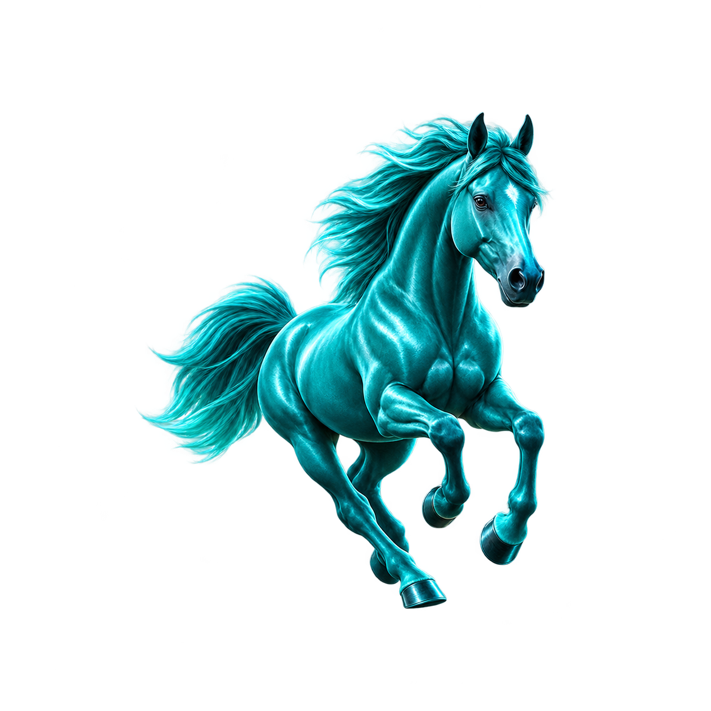
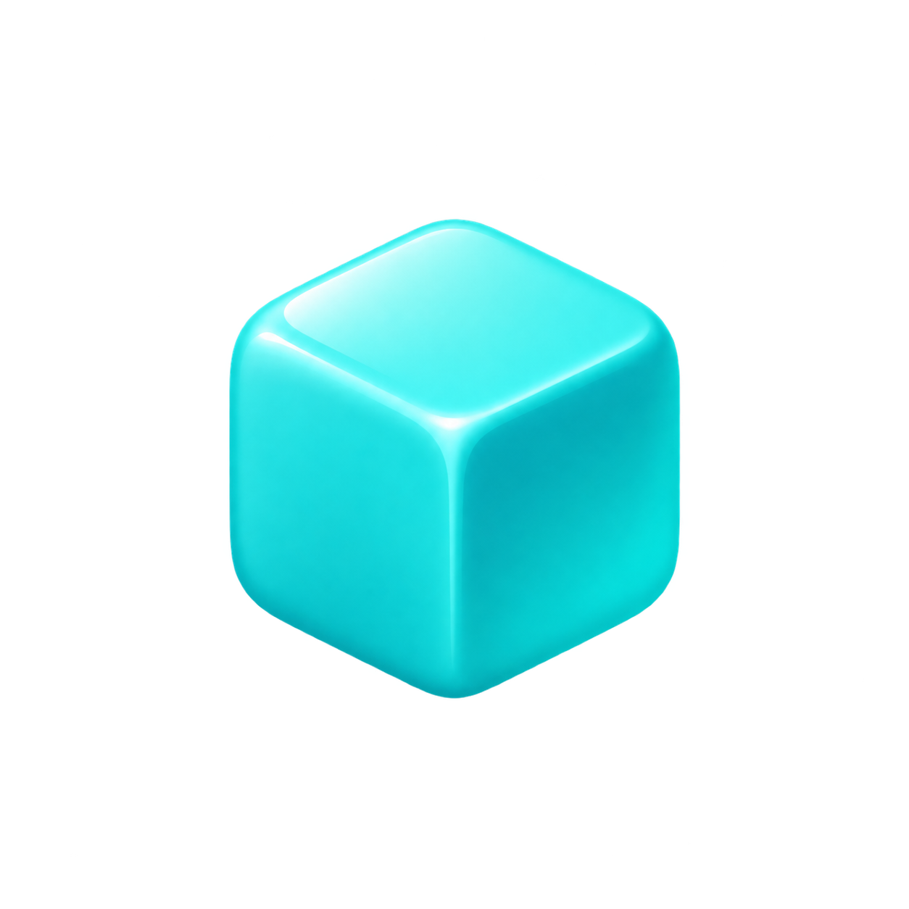
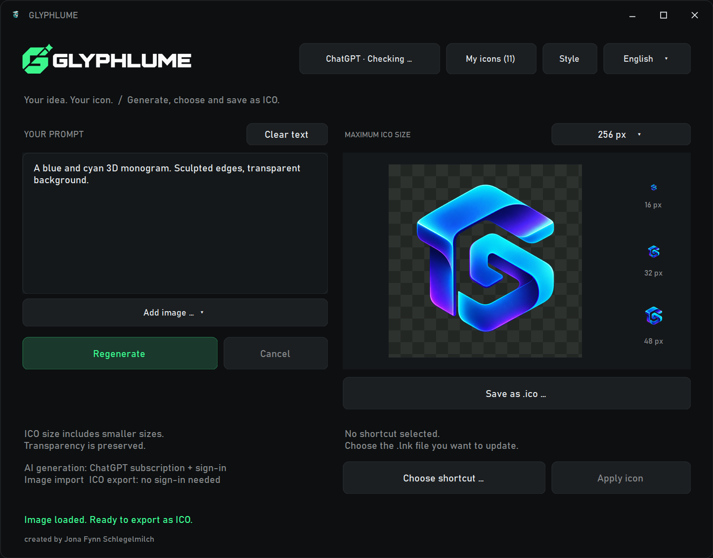

Beschreibe es.
Ein Monogramm, eine Figur, eine neue Idee. Dein Prompt gibt die Richtung vor.
Mach deinen Desktop ein Stück mehr zu deinem. Idee beschreiben, Icon gestalten und als echte Windows-ICO speichern.
Portable App · Echte .ico-Dateien · Deine eigenen Sammlungen

IMAGINE_02
CREATE_0301 / DEIN WORKSPACE
Vom ersten Prompt bis zum fertigen Icon. Alles an einem Ort – mit einem Look, der sich nach dir anfühlt.

Ein Monogramm, eine Figur, eine neue Idee. Dein Prompt gibt die Richtung vor.
Generiere eine Variante oder nutze ein vorhandenes Bild als KI-Referenz.
Exportiere eine echte ICO oder wende sie auf deine ausgewählte Windows-Verknüpfung an.
EINE DATEI. ALLE DETAILS.
Wähle die maximale Größe. Die kleineren Größen landen in derselben ICO-Datei. Transparenz bleibt erhalten.
7 Größen. Eine .ico-Datei.
DEINE IDEEN. GUT GESAMMELT.
Lege eigene Libraries an. Bring deine Bilder mit. Exportiere und importiere ganze Sets mit PNGs, ICOs und Prompts.
02 / SIEH DEN FLOW
Play drücken. Sound aufdrehen. Von der ersten Idee bis zur eigenen Sammlung.
03 / GUT ZU WISSEN
Auf deinem Windows-PC muss Codex mit seiner CLI installiert sein. Melde dich mit einem ChatGPT/Codex-Zugang mit unterstützter Bildgenerierung an. Die Generierung benötigt Internet und nutzt dein Abo-Kontingent. Codex und ein Abo sind nicht im Download enthalten.
Ja. Du kannst eigene Bilder laden, ICO-Dateien exportieren und Libraries lokal verwalten. Nur die KI-Bildgenerierung benötigt den verbundenen Zugang.
Wähle ein Icon aus deiner Library oder lade ein Bild als KI-Referenz hoch. Beschreibe, was geändert werden soll. KI-Bearbeitungen können auch andere Details verändern; ein pixelgenauer Textaustausch ist nicht garantiert.
Lokal im App-Ordner. Einstellungen und Generierungen liegen unter data, angewendete Verknüpfungs-Icons unter Icons. Libraries lassen sich als Set-ZIP mitnehmen. Icons, die Verknüpfungen verwenden, sollten an ihrem Speicherort bleiben.
ZIP herunterladen und entpacken, dann GLYPHLUME.exe öffnen. Den assets-Ordner bei der App lassen. Verwende einen beschreibbaren Ordner auf einem Windows-PC mit .NET Framework 4.x.
MAKE YOUR DESKTOP YOURS.
Windows · ZIP · Ohne Installer · KI mit eigenem ChatGPT/Codex-Zugang